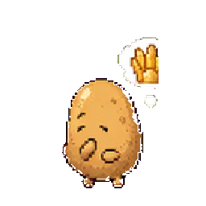

01
Fruit-Veg Trial / PlantTI
试试你的
果蔬TI
五道果蔬命运试镜题。你不用解释自己，只要看看如果被摆上货架、端上桌、放进冰箱，你会怎样。
70
种果蔬人格，包含蔬菜、水果、菌菇和调味植物。
05
道命运试镜题：货架、餐桌、冰箱、标签和被挑选。
01
个今天最像你的 PlantTI，不保证严肃，但尽量好笑。
02
Choose your produce fate
Q01 / 05
果蔬命运试镜
03
Your PlantTI result

你的果蔬TI是
MATCH 00%